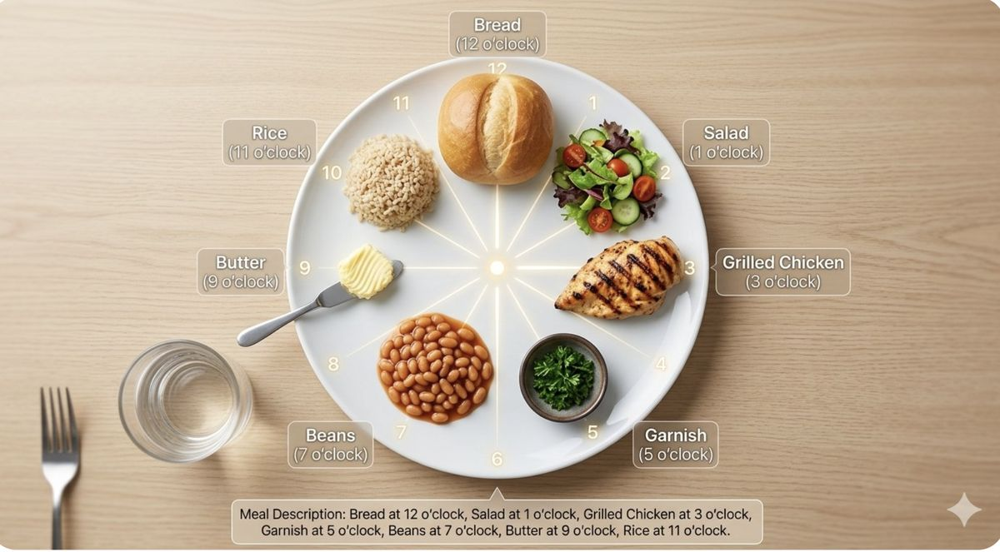

The challenges on a real phone
A model that works in a paper still has to work in someone's hand, at a dinner table, in bad light.
Lighting, angle, and distance
Benchmark photos are usually taken from directly above in good light. A hand-held phone photo is different every time: it may be tilted, too close, too far, or taken in a dim restaurant. Poor lighting is one of the main obstacles named in the pre-made dishes study [15]. For blind users this is worse, because they cannot see whether the photo is good. Apps need to detect blurry or dark images and ask the user to try again, and guide them to center the plate with audio cues.
On the phone or in the cloud?
A model can run on the phone itself or on a cloud server. On-device models, such as the TensorFlow Lite version of YOLOv8 used in the LV food app, answer quickly, work without internet, and keep photos private [2]. But they must be small, which limits accuracy. Cloud models, including large VLMs, are far more capable but need a connection, add delay, and send photos of the user's meals to a company's server. For an LV user eating in a restaurant, I think a fast on-device detector should be the default, with the cloud used only when the user asks for more detail.
Dataset bias
Most large food datasets lean toward Western and Chinese restaurant dishes. A system trained on them may do well on burgers and fried rice but fail on an Indian thali, where many small dishes, rice, and bread share one plate. DiningBench, built from real menus, shows that even strong models struggle when dishes are fine-grained and similar [16]. Building datasets from many cuisines is necessary before these apps work for everyone.
Telling an LV user what is on the plate
Results must become short, useful speech. The common method is the clock face: the plate is treated like a clock, with 12 o'clock furthest from the person. Converting a detection to a clock position is a small geometry problem. Take the center of the food's bounding box, measure its angle from the center of the plate, and divide by 30 degrees (360 degrees / 12 hours).

import math
def clock_position(box, plate_center):
"""box = (x1, y1, x2, y2) in image pixels; y grows downward."""
cx = (box[0] + box[2]) / 2
cy = (box[1] + box[3]) / 2
dx = cx - plate_center[0] # + means right of center
dy = plate_center[1] - cy # + means above center
angle = math.degrees(math.atan2(dx, dy)) % 360 # 0 = straight up
hour = round(angle / 30) % 12
return 12 if hour == 0 else hour
# Example: rice detected left of the plate center
print(clock_position((56, 122, 118, 178), (150, 150))) # -> 9The spoken output should be short, for example "Rice at 9, chicken at 12, salad at 3," and read through text-to-speech, as in the LV app above [2]. For people with partial vision, the screen can add large, high-contrast labels over each food. Phone versus smart glasses also matters here: glasses keep the hands free and see the plate from the eater's point of view, but need extra hardware.
Battery and privacy
Running the camera and a neural network for a whole meal drains the battery, so apps should analyze a single photo or a few frames rather than nonstop video. Privacy is another concern. Meal photos can reveal a person's health, religion, or location, and an LV user may not see what else is in the frame, such as other people at the table. On-device processing, or deleting photos right after analysis, helps protect users.